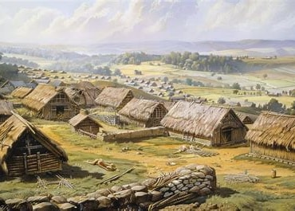
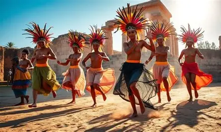
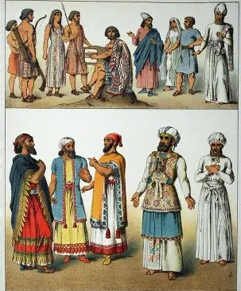
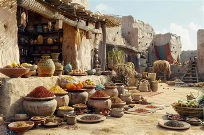
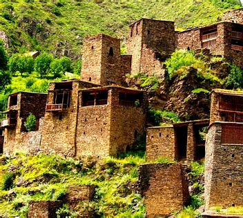

The tour through the ancient village felt like stepping back in time, into a world where stories lived in stone and every narrow path carried the whispers of centuries past. As we passed beneath the weathered wooden gate, our guide explained that the village dated back more than five hundred years, its foundations laid by farmers and craftsmen who chose this fertile valley beside a gentle river as their home. The houses, built from rough gray stones and topped with clay-tiled roofs, leaned slightly with age yet stood firm against the passing of generations. Moss and climbing vines wrapped around the walls, softening their edges and giving them a quiet dignity. In the center of the village stood a small square, where a stone well once served as the heart of daily life. I imagined villagers gathering there at dawn, drawing water, exchanging news, and sharing laughter. The air carried the faint scent of earth and wood smoke, and somewhere in the distance a bell echoed from an old chapel perched on a hill. Inside the chapel, faded paintings and hand-carved benches revealed the devotion and artistry of the peopl e who once prayed there.

The culture of an ancient village was deeply rooted in tradition, community, and a close relationship with nature. Life moved according to the rhythm of the seasons, and every festival, ritual, and daily task reflected respect for the land that sustained the people. Families often lived together in large households, where grandparents, parents, and children shared responsibilities and passed down stories, skills, and beliefs from one generation to the next. Oral storytelling was an important part of village culture, as history, legends, and moral lessons were preserved in tales told beside evening fires. Music and dance were not merely forms of entertainment but expressions of identity, performed during harvest celebrations, weddings, and religious ceremonies.

The style of clothing was practical and suited to daily work. Farmers wore loose garments that allowed easy movement in the fields, while craftsmen chose sturdy fabrics to protect themselves during their labor. In colder seasons, people layered their clothes and added woolen shawls or thick cloaks for warmth. Footwear was often made of leather, shaped by hand and tied with straps. Accessories such as belts, scarves, and handmade jewelry added personal detail and sometimes symbolized marital status or community belonging. During festivals and special ceremonies, villagers proudly wore their finest garments, often decorated with embroidery or detailed patterns passed down through generations. In this way, clothing told the story of the people, their environment, and the traditions that shaped their everyday lives.

Livestock also played an important role in village life. Families raised chickens for eggs, goats or cows for milk, and sometimes sheep for both milk and meat. Meat was usually reserved for special occasions or festivals, as it was not eaten every day. Milk was turned into butter, cheese, or yogurt, providing important nourishment. Fishing and hunting added variety to the diet when possible, especially for villages near rivers or forests. Cooking methods were traditional and practical. Meals were often prepared over open fires using clay pots or iron pans. Stews and soups were common because they were easy to make and could feed many people at once. Herbs and wild plants were used to add flavor, as spices were rare and valuable. Families gathered together to share their meals, turning eating into a time of connection and gratitude. In this way, food was not only a source of survival but also a symbol of community, hard work, and respect for nature’s gifts.

The river that often flowed near the village reflected the changing colors of the seasons, sparkling brightly in the morning light and turning silver at dusk. Birds sang from the treetops, and the distant sound of flowing water created a peaceful rhythm that accompanied daily work. In autumn, the leaves transformed into rich tones of orange and crimson, covering the ground like a natural carpet. Winter brought a quiet stillness, sometimes wrapping the village in a soft blanket of snow that made the stone houses look magical and timeless.

the ancient village represents a way of life built on simplicity, unity, and harmony with nature. Every part of the village, from its stone houses and narrow paths to its traditions, clothing, food, and natural surroundings, reflects the values and spirit of its people. The culture shows strong family bonds and respect for heritage, while the traditional clothing and handmade crafts reveal creativity and identity. The simple yet nourishing food highlights the villagers’ har d work and deep connection to the land. At the same time, th e breathtaking natural beauty surrounding the village adds p eace and meaning to everyday life.
....(^_^)
Thank You